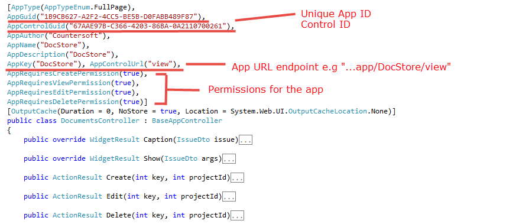
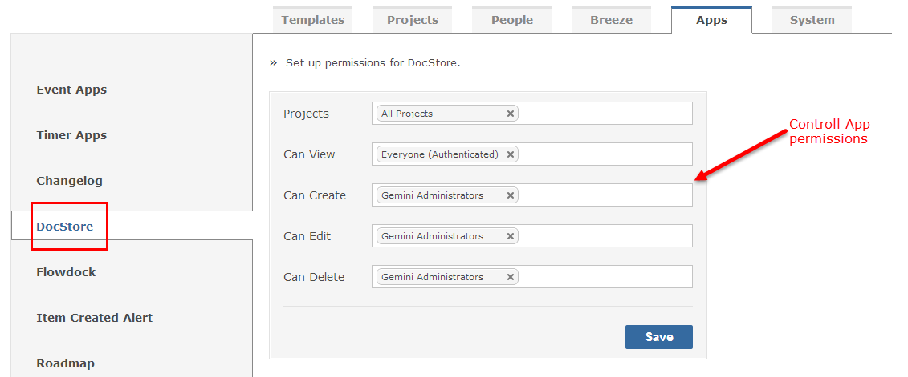
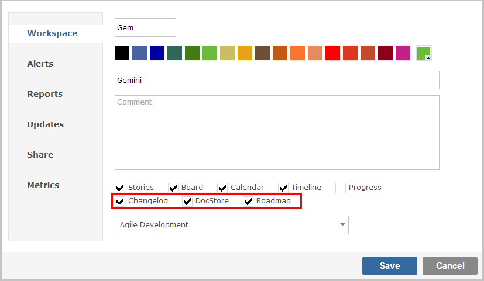

Full Page apps allow you to add a new view to Gemini (eg. DocStore).
A custom Full Page app consist of the following elements.

DownloadThe Countersoft GitHub repository contains sample applications that are built using the Apps Framework
Gemini Administrators can configure permissions for the Full Page app.
Follow the packaging and deployment instructions to deploy Full Page app in Gemini.

After configure Full Page app's permissions, the app should appears in views option of the workspace settings.

Follow the packaging and deployment instructions to deploy Full Page app in Gemini.